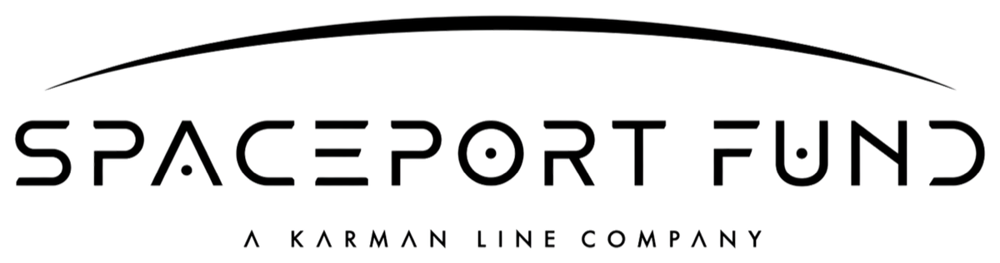
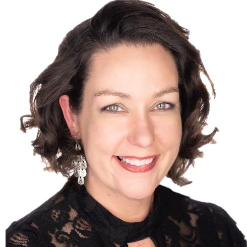
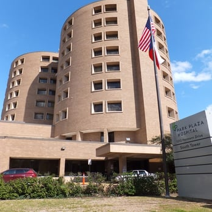
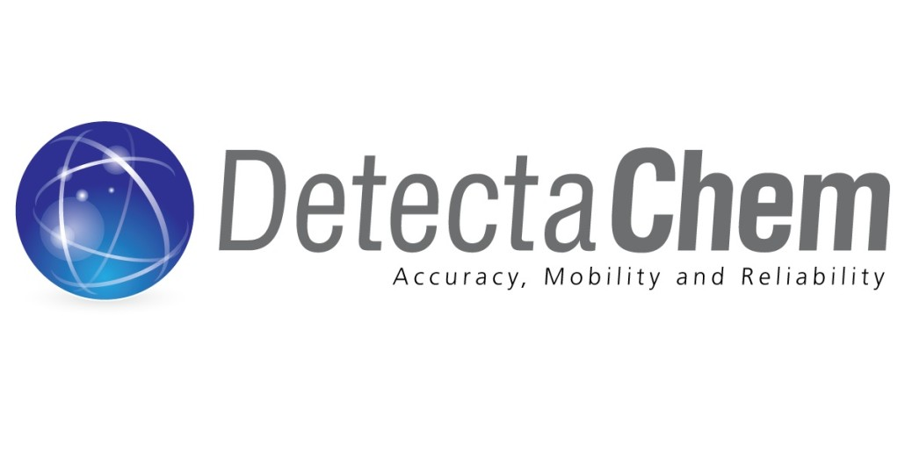
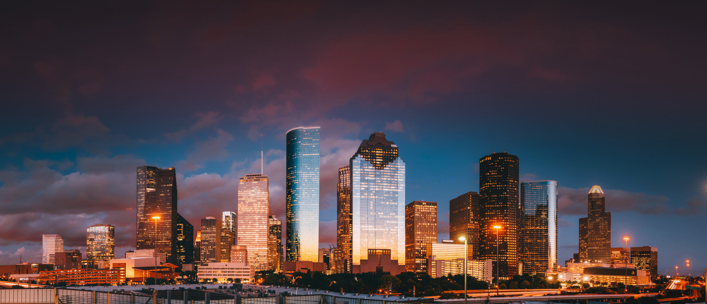
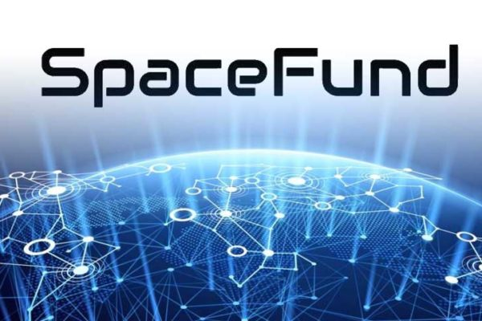

Karman Line / SpacePort Fund
Workforce housing and strategic land near America's most active spaceports.
Open raiseRamsey Financial Group manages the Leo B. Womack Family Trust and partners with aligned family offices, angel networks, and institutional investors across space, water, AgTech, AI, energy, and reconstruction finance. We build positions in companies solving problems that matter — and stay for the full arc.
Six active positions across water, space, agriculture, AI, and energy. Each is open to qualified co-investment. Click any project for the deck, the team, and the structure of the raise.
Workforce housing and strategic land near America's most active spaceports.
Open raiseNASA-spinoff aeroponics turning underutilized commercial real estate into year-round indoor farms.
Open raiseSpace-age wine — premium grapes grown indoors as climate destabilizes traditional vineyards.
Open raisePatented attention-tracking AI delivering 3–5× faster learning — deployed across federal workforce training.
Open raiseGulf seawater desalination addressing the South Texas water crisis — backed by 30-year offtake contracts.
Open raiseSlot reserved pending final alignment on the six current raises.
Awaiting confirmationVenture capital gets a space company off the ground. It is the wrong tool once the company has hardware on orbit producing revenue. The missing tools — debt, infrastructure, insurance — have matured every other capital-intensive industry before this one. Building them for space is what we do.
Read the PaperThe spark. Pre-seed through Series B venture capital.
The bridge. Non-dilutive, secured debt for revenue-generating assets.
The ground. Workforce housing, labs, and spaceport-adjacent real estate.

The enabler. Making space assets insurable — and therefore financeable.
Three decades, three generations of operators across life sciences, energy, real estate, and the space economy. Every position in the portfolio is shaped by people who have run companies, sat on boards, and stayed in the work for the full arc.
He was a founding member of the Houston Angel Network (HAN) and later served as its President and Chairman, and is still an active member. He continues to search for unique opportunities in real estate, early stage technology, medical device, and micro-cap public companies involving these disciplines.
Bart has built and operated companies across entertainment, media, and frontier technology for more than thirty years. He produced motion pictures and television, interviewed presidential candidates, and for over five years owned the largest nightclub in Texas. After producing and hosting a public-interest television program, he led the effort that won Houston Media Source 501(c)(3) status and a ten-year, $12 million grant from the City of Houston to fund local community media. He has since spent years in early-stage technology — building corporate brands, running marketing for bootstrapped startups, and producing events attended by thousands.
An active inventor and investor, Bart also volunteers locally and leads media and communications for the Future of Humanity Foundation.

Meagan was a cofounder of the NewSpace Business Plan Competition, the world's longest-running space business plan competition that has launched hundreds of startups and catalyzed an entire industry. She is a member of the Board of Directors or a Board Advisor for more than 10 organizations, in the for-profit and non-profit realms. She holds an MBA in Entrepreneurship and Finance from Rice University as well as a BBA in Management, Marketing, and Supply Chain Logistics from the University of Houston. Formerly, she was a Technology Transfer Specialist at NASA, a professor of Executive Communication at the University of Houston, a management consultant in the oil and gas industry, and earned her Series 6 and 63 licenses as a financial advisor.
A small selection of the firm's highest-conviction wins — operating businesses, exits, and projects that have moved from thesis to execution. Each one represents the kind of work, capital structure, and partner network we bring to every position.

One of the largest physician-owned hospitals in Houston's history. Leo Womack served as a founding board member and Secretary-Treasurer; the 376-bed flagship joined HCA Houston Healthcare in 2017.
View project
DetectaChem is a Texas-based manufacturer of handheld narcotic, explosive, and chemical-identification technology used by safety and security operators around the world.
View project
Ramsey Financial Group manages a $100M portfolio of properties in and around Houston, with the majority located off the freeway in Baytown.
View project
An early-stage space resources company and a successful exit in Meagan Crawford's portfolio, acquired as the space economy matured.
View projectFeatured speeches and interviews from across the firm — from the founding history of Ramsey to the architecture of the Texas space economy. Full library updated as new appearances air.
Whether you are building a company, allocating capital, or writing about the future of frontier industries — we read every inquiry and respond to the ones we can help.
Present your idea or funding needs together with a brief executive summary. We review every submission and respond to opportunities that fit our thesis.
Submit an Executive SummaryFor accredited investors and institutional LPs interested in RFG co-investment opportunities or allocation to affiliated funds. Accredited verification required before specific terms are shared.
Request an IntroductionInterview requests, speaking invitations, podcast appearances, and policy engagement. Meagan Crawford is available for commentary on space finance, capital-stack structure, and industry policy.
Request an Interview